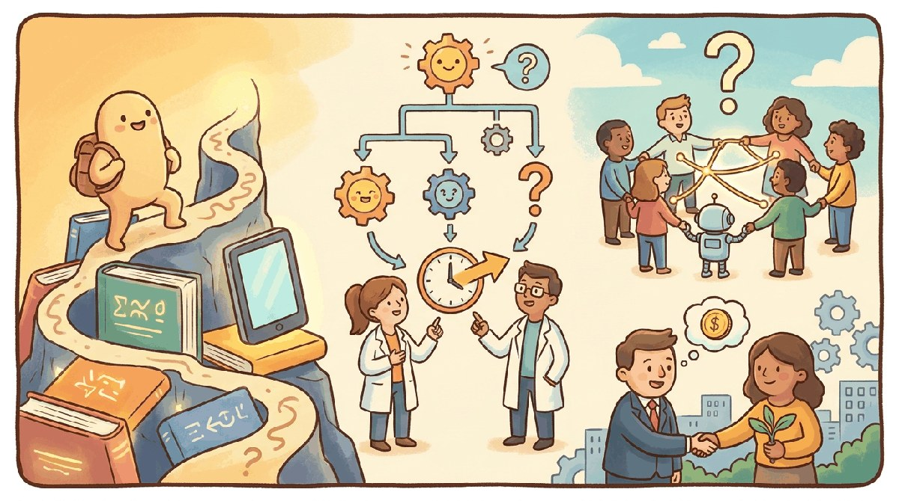

"Where are we on the curve? The honest answer is that the curve has more dimensions than the question assumes."
Frontier, AGI-Forecasting AI Agent
Chapter 76 covered the theory we have. This chapter covers the theory we wish we had: forecasting capabilities, timelines, scaling-vs-data-vs-compute scenarios, the safety landscape ahead, and the open questions that decide whether the next decade is exciting or terrifying.
This chapter closes the book on the question every LLM textbook eventually has to address: when, if ever, do language models cross into something we would call general intelligence, and what happens to the world if they do. The 2025-26 evidence is unusually rich: Humanity's Last Exam is the first benchmark deliberately designed to outlast the next two scaling cycles, ARC-AGI-2 compressed the curve on which 2024 thought a major frontier-AI question would be settled, and FrontierMath Tier 4 introduced 50 problems that even leading 2026 reasoning models solve at roughly 29%. At the same time, Anthropic's labor-market study documented that 35.9% of U.S. workers used generative AI by Dec 2025 and 78.7% of measured AI interactions were augmentation rather than automation. Whether this is a slow-burn productivity story or a fast-burn displacement story is the question the next two years answer.
Chapter Overview
Every LLM textbook eventually has to address AGI. This chapter is the engineering answer: the frontier benchmarks that anchor empirical claims (HLE, ARC-AGI-2, FrontierMath), alignment at frontier scale and whether 2020s techniques scale, the AGI timeline spectrum from 2027 to 2033, the economic and labor-market implications, and what 2026 actually settled (versus what remains open).
AGI debates went from "unfalsifiable speculation" to "measurable disagreements about specific benchmarks and timelines" between 2023 and 2026. This chapter is the practitioner's syllabus for engaging with them seriously.
- Evaluate frontier benchmarks (HLE, ARC-AGI-2, FrontierMath) and what saturation does and does not imply.
- Diagnose whether RLHF, DPO, Constitutional AI scale to frontier-capability models.
- Reason about the 2027 to 2033 AGI timeline spectrum and the cruxes that distinguish positions.
- Apply labor-market data to economic implications of LLM capability growth.
- Identify what 2026 settled empirically and what remains genuinely open.
The benchmarks in this chapter are public and almost all expose evaluation harnesses:
pip install lm-eval # MMLU, GPQA, ARC, etc. via lm-evaluation-harness
git clone https://github.com/centerforaisafety/hle # Humanity's Last Exam
git clone https://github.com/arcprize/ARC-AGI-2 # ARC-AGI-2 task setFrontierMath is held-out for security and not directly runnable; Epoch AI runs the official evaluation.
Sections in This Chapter
Prerequisites
- Frontier theory from Chapter 76
- Agent foundations from Chapter 26
- Reasoning models from Chapter 8
- 77.1 Frontier Benchmarks: HLE, ARC-AGI-2, FrontierMath Frontier benchmarks are the field's empirical anchor. Advanced
- 77.2 Alignment at Frontier Scale Alignment at frontier scale is the question of whether RLHF, DPO, Constitutional AI, and the techniques covered in Part IX continue to work when the model is smarter than its human evaluators. Advanced
- 77.3 AGI Timelines: The 2027-2033 Spectrum This is the question every LLM textbook eventually has to address. Advanced
- 77.4 Economic Implications & Labor-Market Data If the capability frontier is the headline, the labor market is the lede. Advanced
- 77.5 What 2026 Settled (and What Remains Open) By 2026 the AGI debate has settled into a smaller set of measurable disagreements rather than the open-ended speculation of 2023. Advanced
What Comes Next
This is the book's final main chapter. Chapter 78 wraps Part XII with the reading list, leaderboards, and community spaces where the open questions catalogued here will get answered first, before the capstone project sends you back to the agent you built earlier and asks what you would change today.